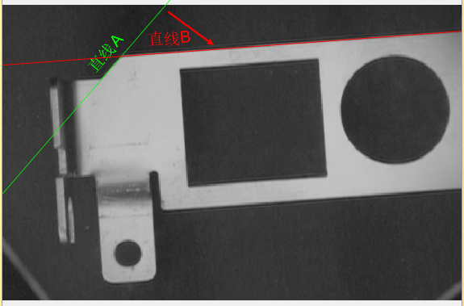
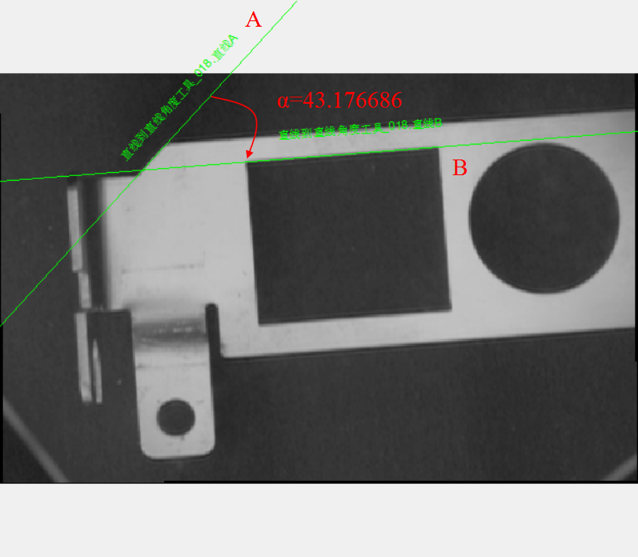
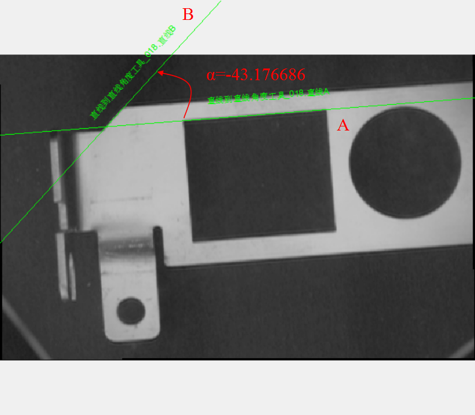
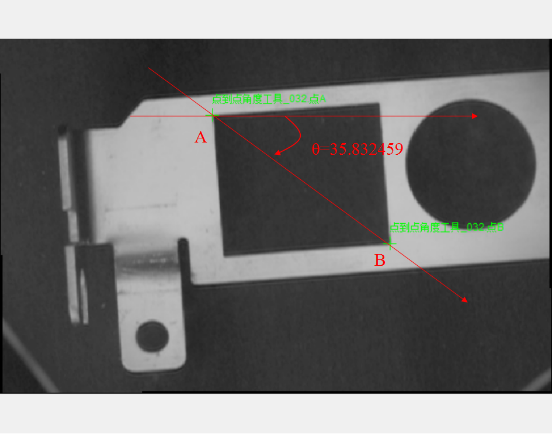
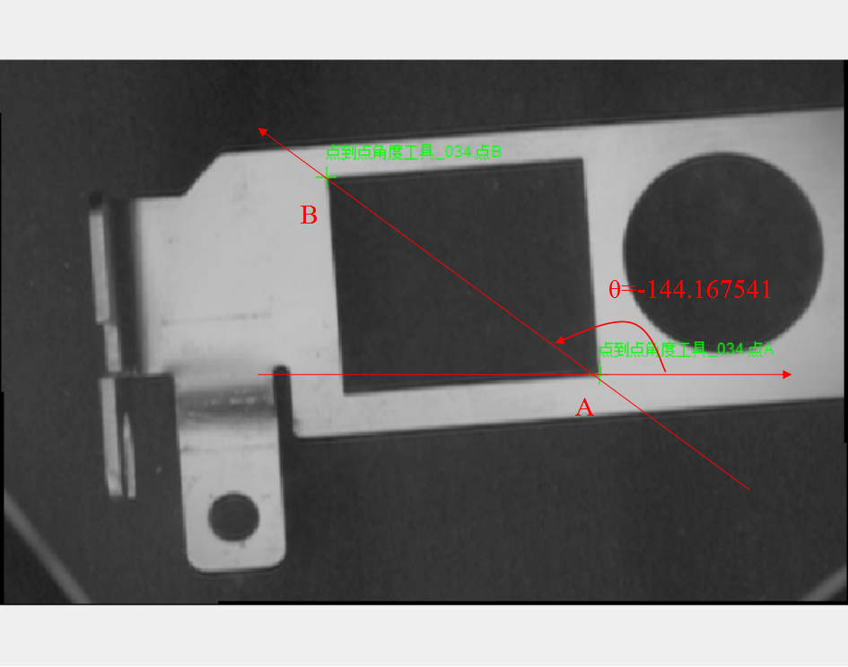

角度计算是计算直线到直线角度和点到点角度。
| 接口名称 | 接口描述 |
|---|---|
| AngleLine2Line | 直线到直线角度 |
| AnglePoint2Point | 点到点角度 |
功能：计算直线lineA到直线lineB的角度，顺时针为正，逆时针为负，范围[-pi, pi]。
如下图所示，从A到B结果为44.9度，从B到A为-44.9度：

参数：
lineA：直线A，scLine类型。
lineB：直线B，scLine类型。
返回值：角度结果，单位弧度，scRadian类型。
功能：计算两点之间的角度，即两点连线与水平方向的夹角，单位弧度，范围[-pi, pi]。
参数：
p1：点A，sc2Vector类型。
p2：点B，sc2Vector类型。
返回值：角度结果，单位弧度，scRadian类型。
直线到直线角度
直线A与直线B的角度α可以描述为：假设直线的方向为向上、向右为正，直线A旋转α度后与直线B平行（或重合），其中α的方向为顺时针为正，逆时针为负。其示意图如图1所示


点到点角度
点A与点B的角度θ可以描述为：点A和点B确定的直线AB，假设其方向为由A指向B，且水平方向向右为正，则水平线旋转θ度与直线AB平行（重合）。其中，θ的方向为顺时针为正，逆时针为负。其示意图如图2所示：

